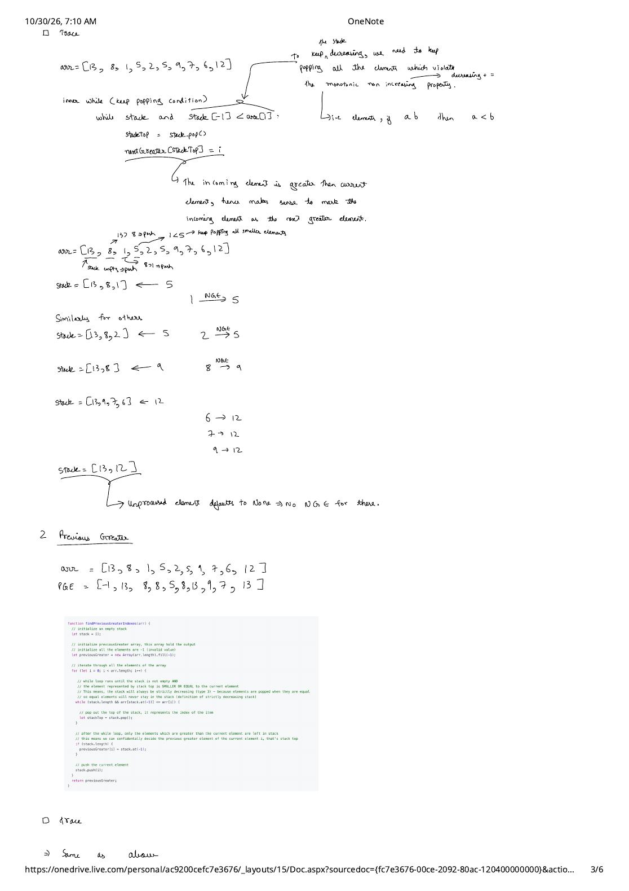
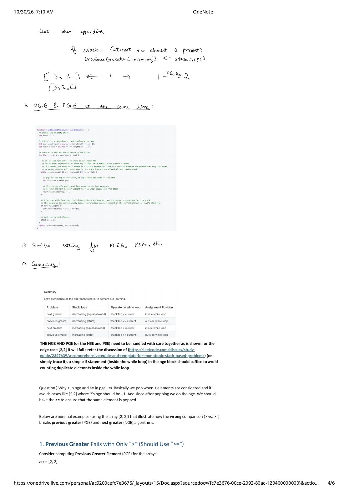

Part 2: Step-by-Step Traces for Next Greater, Previous Greater, Next Smaller & Previous Smaller
Expanded from MonotonicStack_01_A_comprehensive_guide_and_template.pdf (Pages 2–4) · View original handwritten pages
With the generic outer-for / inner-while template from Part 1 in hand, we now trace the exact 10-element benchmark array from the handwritten notes:
Notice why this specific array is such a great teaching dataset: it starts with a descending run (13, 8, 1), contains non-adjacent duplicate values (arr[3] = 5 and arr[5] = 5 separated by 2), triggers multi-element pop cascades at 9 and 12, and leaves global/suffix maxima (13 and 12) on the stack at termination.
1. Next Greater Element (NGE)
For each index $i$, we want the first index to the right of $i$ whose value is strictly greater than $\text{arr}[i]$ (or -1 if none exists). On our benchmark array:
- Input values:
[13, 8, 1, 5, 2, 5, 9, 7, 6, 12] - NGE values:
[-1, 9, 5, 9, 5, 9, 12, 12, 12, -1] - NGE indices:
[-1, 6, 3, 6, 5, 6, 9, 9, 9, -1]
Why NGE Uses < and Resolves Inside the while Loop
To keep the stack monotone non-increasing (Type 4: decreasing, equal allowed), we pop whenever arr[st.top()] < arr[i]. Think about what that condition means at the exact moment stackTop is popped:
stackTopwas waiting on the stack because no element betweenstackTop + 1andi - 1was strictly greater thanarr[stackTop].- Incoming
arr[i]is strictly greater thanarr[stackTop]. - Therefore, index
iis guaranteed to be the very first (nearest) greater element to the right ofstackTop! We immediately setnextGreater[stackTop] = iinside thewhileloop.
Any indices still sitting in the stack after the for loop finishes (here [13, 12]) never encountered a strictly larger value to their right, so they keep their initialized default of -1.
// 1. Next Greater Element Indices — O(n) Time, O(n) Space
vector<int> findNextGreaterIndexes(const vector<int>& arr) {
int n = arr.size();
vector<int> nextGreater(n, -1); // Default -1 if no greater element exists on right
stack<int> st; // Type 4: Monotonic non-increasing (equal allowed)
for (int i = 0; i < n; ++i) {
// Pop all indices whose values are STRICTLY SMALLER than arr[i]
while (!st.empty() && arr[st.top()] < arr[i]) {
int stackTop = st.top();
st.pop();
nextGreater[stackTop] = i; // Incoming i is stackTop's Next Greater!
}
st.push(i);
}
return nextGreater;
}Complete 10-Step Dry Run for NGE
| $i$ | arr[i] |
while (top < arr[i]) Pops & Assignments |
Stack After push(i) (idx:val) |
|---|---|---|---|
| 0 | 13 | Stack empty — skip while | [0:13] |
| 1 | 8 | 13 < 8 false | [0:13, 1:8] |
| 2 | 1 | 8 < 1 false | [0:13, 1:8, 2:1] |
| 3 | 5 | Pop 2:1 $\to$ NGE[2] = 3 (val 5); 8 < 5 false | [0:13, 1:8, 3:5] |
| 4 | 2 | 5 < 2 false | [0:13, 1:8, 3:5, 4:2] |
| 5 | 5 | Pop 4:2 $\to$ NGE[4] = 5 (val 5); 5 < 5 is false (3:5 stays!) | [0:13, 1:8, 3:5, 5:5] |
| 6 | 9 | Pop 5:5, 3:5, 1:8 $\to$ NGE[5]=6, NGE[3]=6, NGE[1]=6 (val 9) | [0:13, 6:9] |
| 7 | 7 | 9 < 7 false | [0:13, 6:9, 7:7] |
| 8 | 6 | 7 < 6 false | [0:13, 6:9, 7:7, 8:6] |
| 9 | 12 | Pop 8:6, 7:7, 6:9 $\to$ NGE[8]=9, NGE[7]=9, NGE[6]=9 (val 12) | [0:13, 9:12] (unpopped $\to$ -1) |
2. Previous Greater Element (PGE)
Now we want, for each index $i$, the nearest index to the left of $i$ whose value is strictly greater than $\text{arr}[i]$ (or -1 if none exists):
- Input values:
[13, 8, 1, 5, 2, 5, 9, 7, 6, 12] - PGE values:
[-1, 13, 8, 8, 5, 8, 13, 9, 7, 13] - PGE indices:
[-1, 0, 1, 1, 3, 1, 0, 6, 7, 0]
Why PGE Uses <= and Resolves Outside the while Loop
As we scan left to right, the stack already holds candidates to the left of $i$. Before pushing $i$, we run while (!st.empty() && arr[st.top()] <= arr[i]) st.pop();:
- Every element on top of the stack that is smaller than or equal to
arr[i]is popped—both because it is not strictly greater thanarr[i]and becausearr[i]itself is farther right and $\ge$ it, rendering it useless for all future indices $> i$! - Right after the
whileloop finishes, only elements strictly greater thanarr[i]survive on the stack (Type 3: strictly decreasing). Thus, if!st.empty(),st.top()is the exact Previous Greater Element of $i$!
For example (Page 4 of the notes): if the stack holds [3, 2] and incoming 1 arrives, 2 <= 1 is false so nothing pops, PGE(1) = stack.top() = 2, and the stack becomes [3, 2, 1]. Conversely, at $i = 5$ (the second 5 in our 10-element array), arr[st.top()] <= 5 pops 2 and pops the earlier 5 at index 3, exposing 8 (index 1) as the true strictly greater predecessor!
// 2. Previous Greater Element Indices — O(n) Time, O(n) Space
vector<int> findPreviousGreaterIndexes(const vector<int>& arr) {
int n = arr.size();
vector<int> previousGreater(n, -1);
stack<int> st; // Type 3: Strictly decreasing (no equal elements stay!)
for (int i = 0; i < n; ++i) {
// Pop all indices whose values are SMALLER OR EQUAL to arr[i]
while (!st.empty() && arr[st.top()] <= arr[i]) {
st.pop();
}
// Outside while loop: stack top (if any) is strictly greater than arr[i]
if (!st.empty()) {
previousGreater[i] = st.top();
}
st.push(i);
}
return previousGreater;
}3. Mirror Symmetry: Next Smaller (NSE) & Previous Smaller (PSE)
By the inverse relation rule from Part 1, switching from Greater to Smaller simply flips < to > and <= to >=, turning the stack into a monotone increasing stack:
// 3. Next Smaller Element Indices (Type 2: Non-decreasing stack, '>' inside while)
vector<int> findNextSmallerIndexes(const vector<int>& arr) {
int n = arr.size();
vector<int> nextSmaller(n, -1);
stack<int> st;
for (int i = 0; i < n; ++i) {
while (!st.empty() && arr[st.top()] > arr[i]) {
nextSmaller[st.top()] = i;
st.pop();
}
st.push(i);
}
return nextSmaller;
}
// 4. Previous Smaller Element Indices (Type 1: Strictly increasing stack, '>=' outside while)
vector<int> findPreviousSmallerIndexes(const vector<int>& arr) {
int n = arr.size();
vector<int> previousSmaller(n, -1);
stack<int> st;
for (int i = 0; i < n; ++i) {
while (!st.empty() && arr[st.top()] >= arr[i]) {
st.pop();
}
if (!st.empty()) {
previousSmaller[i] = st.top();
}
st.push(i);
}
return previousSmaller;
}4. Interactive Step-by-Step Stack Visualizer
Select any of the four problems below and step through arr = [13, 8, 1, 5, 2, 5, 9, 7, 6, 12] one index at a time to watch elements enter, pop, and resolve their output slots:
5. Summary of All Four Approaches
Comparing all four implementations side by side cements the two orthogonal choices—Increasing vs. Decreasing (controlled by > vs. <) and Next vs. Previous (controlled by inside-loop vs. outside-loop assignment and strict vs. non-strict equality):
| Problem | Stack Type | Operator in while Loop |
Assignment Position |
|---|---|---|---|
| Next Greater (NGE) | Decreasing (equal allowed) | stackTop < current |
Inside while loop |
| Previous Greater (PGE) | Decreasing (strict) | stackTop <= current |
Outside while loop |
| Next Smaller (NSE) | Increasing (equal allowed) | stackTop > current |
Inside while loop |
| Previous Smaller (PSE) | Increasing (strict) | stackTop >= current |
Outside while loop |
Wait—what happens if we try to combine the first two rows of that table to compute NGE and PGE simultaneously in a single pass? Look closely at the while operator column: NGE wants < whereas PGE wants <=! In Part 3, we dissect why naively combining them breaks on arr = [2, 2] and how a single if guard solves it cleanly.
From the Handwritten Notes
Open the original handwritten scans of Pages 3 and 4 below to compare the hand-drawn pop arrows on [13, 8, 1, 5, 2, 5, 9, 7, 6, 12] and the summary table:
View original page 3 — Handwritten NGE arrow trace & Previous Greater setup


[13, 8, 1] <- 5, [13, 8, 2] <- 5, [13, 8] <- 9, [13, 9, 7, 6] <- 12, leaving [13, 12] unpopped, followed by Previous Greater.View original page 4 — PGE trace, combined NGE + PGE & duplicate edge-case note


[2, 2] breaks naive combined templates.